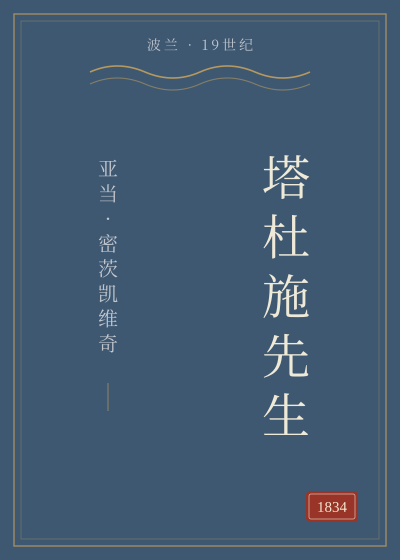
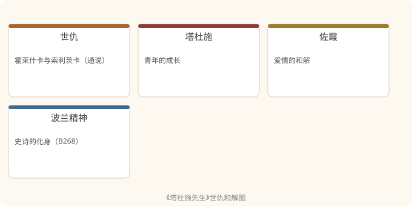

塔杜施先生
一、基本信息
| 作者 | 亚当·密茨凯维奇 |
|---|---|
| 成书/出版 | 1834年出版（Britannica：Pan Tadeusz (1834)） Adam Mickiewicz (Polish poet) — Encyclopaedia Britannica（百科全书） |
| 国别/地区 | 波兰 |
| 时代 | 近代 · 19世纪 |
| 体裁 | 民族史诗 |
| 语言 | 波兰语 |

《塔杜施先生》世仇和解图（主题·结构图）
二、创作背景
Britannica（B268）：'Mickiewicz's masterpiece, the great epic poem Pan Tadeusz (1834)'——描述'life of the Polish gentry through a feud between two noble families'；'shows the effect of the Napoleonic myth'——波兰人视法军为'从俄国统治下解放的唯一希望'。
地位（B268）：'came to epitomize the Polish spirit'。
三、内容脉络
两大贵族家族的世仇与和解——塔杜施与佐霞的爱情（通说待核）。
波诺尼茨基神父的调停与爱国教育（通说待核）。
四、主要人物表
| 人物 | 身份 | 说明 |
|---|---|---|
| 塔杜施 | 青年 | 史诗主角（通说待核） |
| 佐霞 | 姑娘 | 爱情线（通说待核） |
五、主题与艺术特点
- 民族史诗：世仇的和解即民族的和解（通说）。
- 拿破仑神话（B268）。
- 立陶宛风物的白描（通说待核）。
六、影响与评论
- Britannica：'masterpiece'；'epitomize the Polish spirit'（B268）。
Adam Mickiewicz (Polish poet) — Encyclopaedia Britannica（百科全书） - 波兰的民族圣典：卡钦斯基总统曾于克里姆林宫朗读（通说待核）。
Adam Mickiewicz (Polish poet) — Encyclopaedia Britannica（百科全书）
七、阅读建议
难点
- 波兰贵族'萨姆拉'制度。
- 十二卷书的结构。
- 《塔杜施先生》（人民文学出版社景凯旋译本？——通说待核）。
- 英文原版（公有领域）。
对照《巴尼？》——不：对照《先人祭》读。
八、待核实
- 十二卷（Books）结构核对。
- 景凯旋译本信息待核。
- 拿破仑神话段落核对。
本页主要来源
亚当·密茨凯维奇的其他收录作品：塔杜施先生